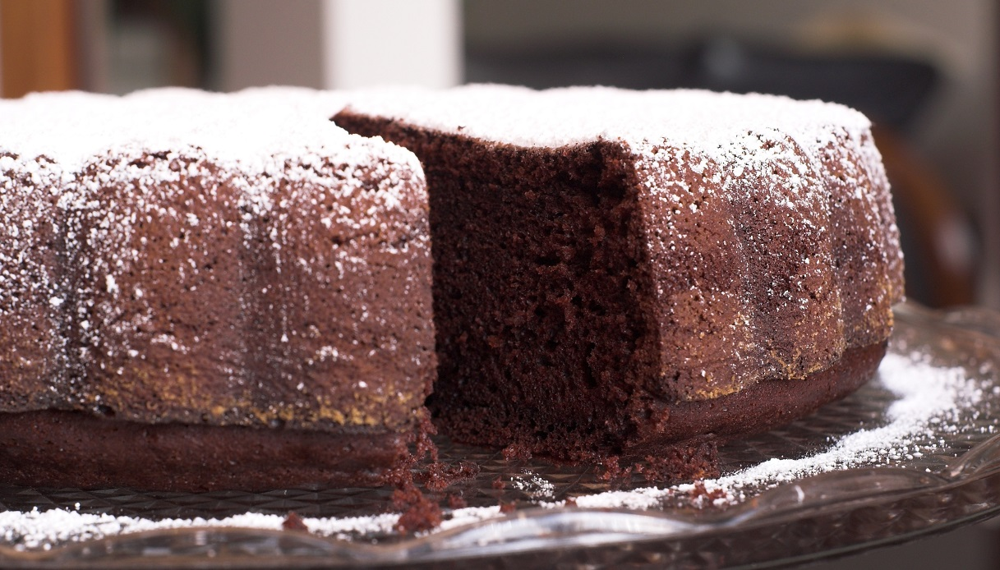
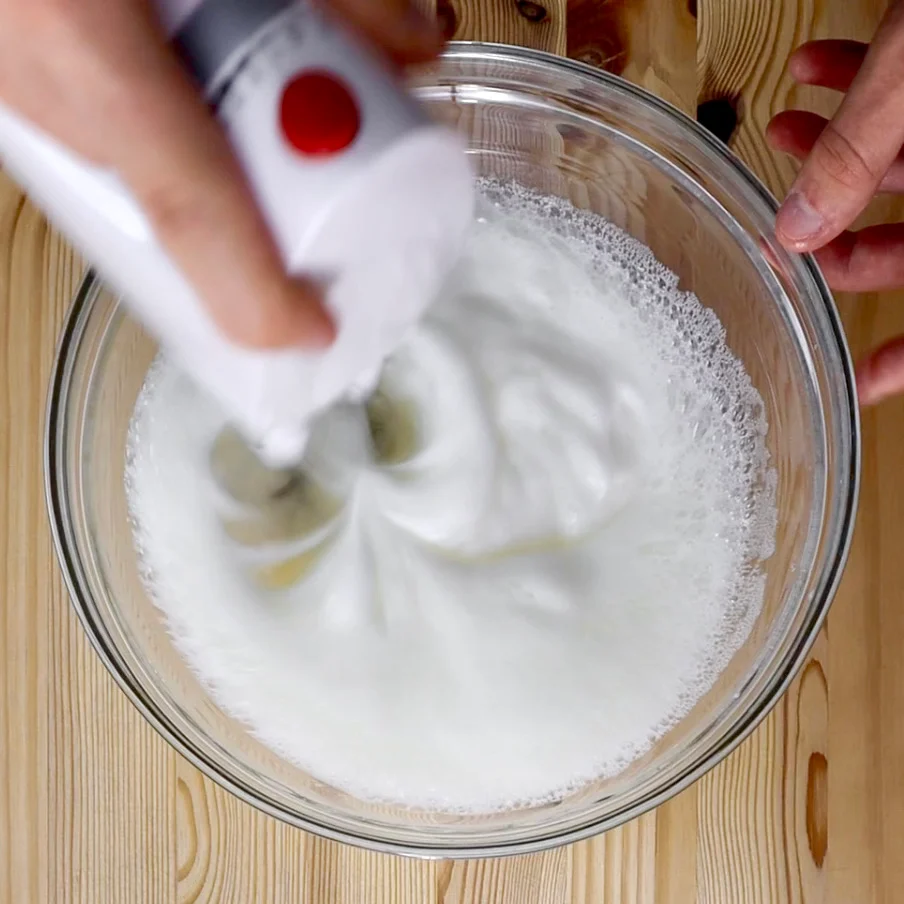
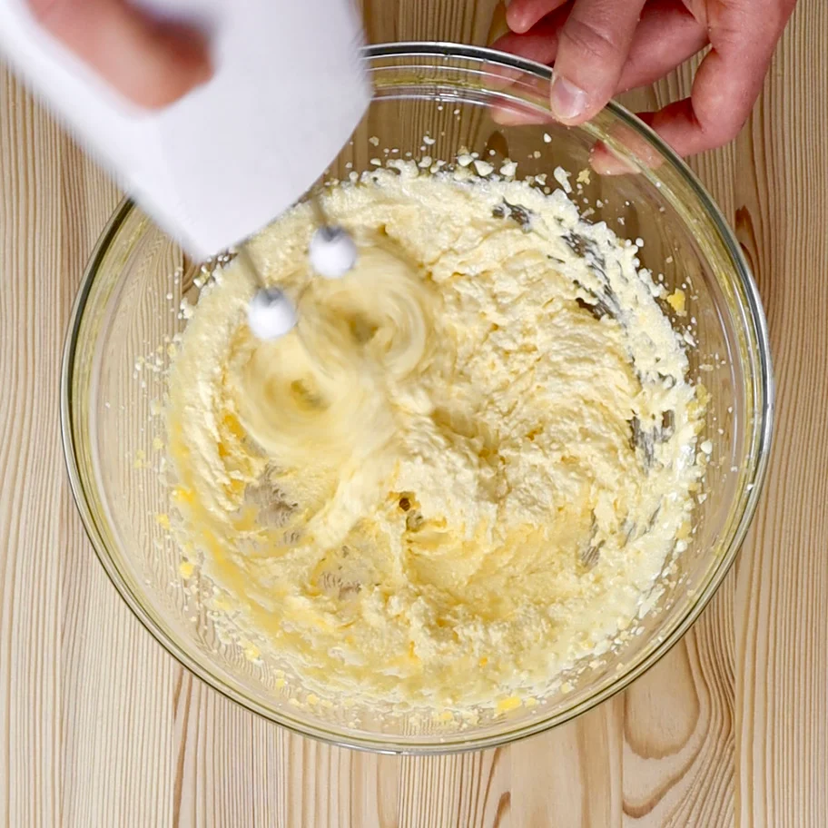
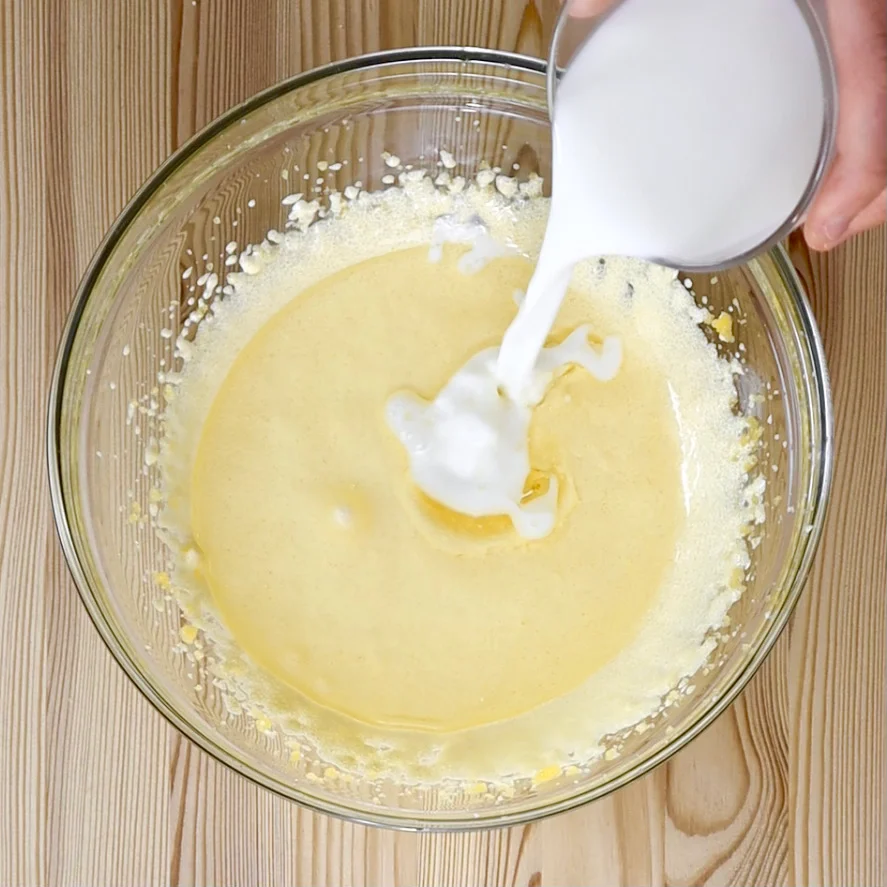
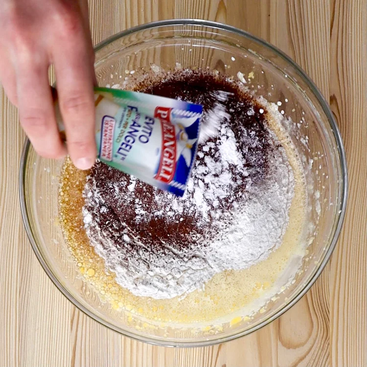
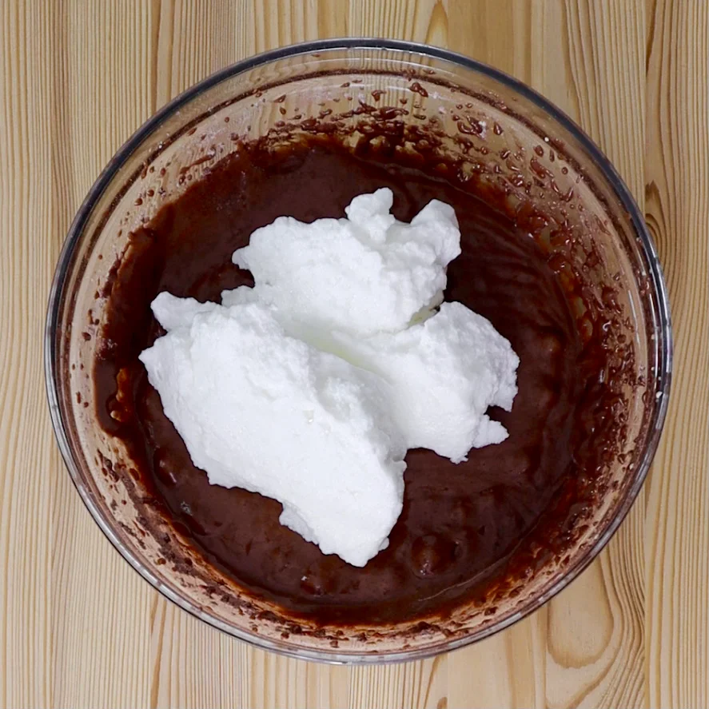
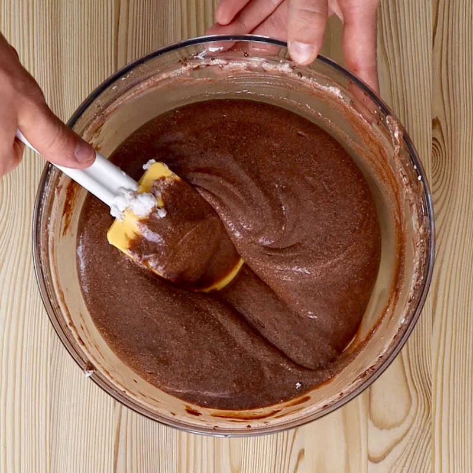
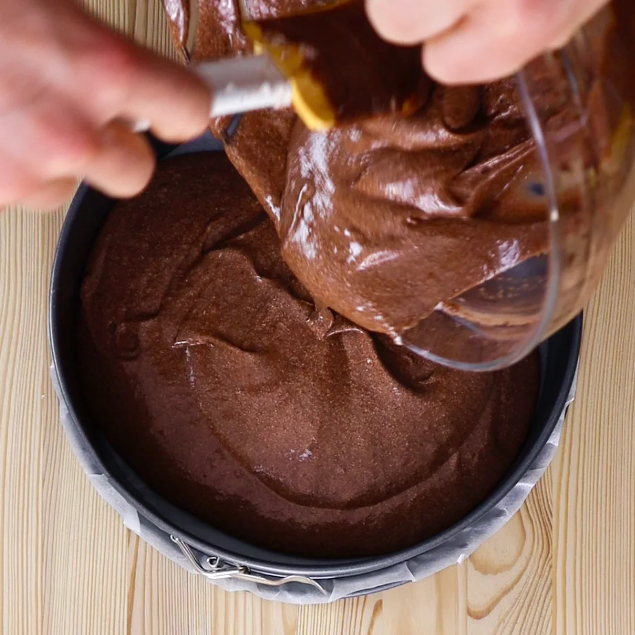

Torta paradiso al cioccolato

Stagione Tutte le stagioni
Ingredienti 8
Facilità Facile
Pronto in 55 minuti
Ingredienti
Dosi per 8 persone:
|
4
|
Uova
|
|
200 g
|
Farina 00
|
|
200 g
|
Zucchero
|
|
120 ml
|
Olio di semi
|
|
100 ml
|
Latte
|
|
30 g
|
Cacao amaro
|
|
8 g
|
Lievito per dolci
|
|
|
zucchero a velo (per decorare)
|
Utensili
Sbattitore con fruste
Bilancia digitale
Spatola in silicone
Ciotola
Teglia
Carta da forno
Preparazione: 15 minuti
Come fare: Torta paradiso al cioccolato
- Separiamo i tuorli dagli albumi e montiamo gli albumi a neve.

- Mescoliamo lo zucchero e i tuorli per qualche minuto fino a ottenere un composto chiaro. Amalgamiamo al composto l’olio e il latte.


- Aggiungiamo la farina, il cacao setacciato e il lievito per dolci ed eliminiamo tutti i grumi con le fruste elettriche.

- Uniamo gradualmente gli albumi montati mescolando dal basso verso l’alto con una spatola.

- Quando otteniamo un composto uniforme, foderiamo una tortiera a cerchio apribile del diametro di 24 cm con un foglio di carta forno.


- Versiamo il composto nella tortiera e cuociamo per 40 minuti in forno preriscaldato a 170° C se il forno è ventilato, a 180° C se è statico. Al termine facciamo la prova stecchino.